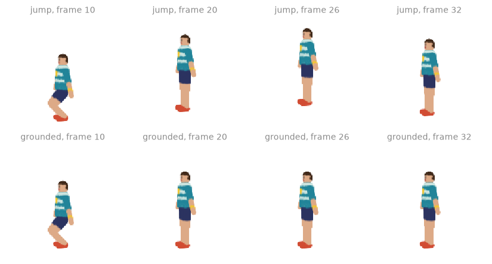
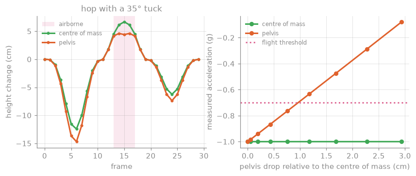
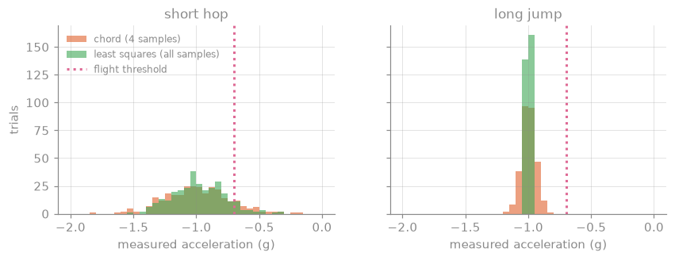
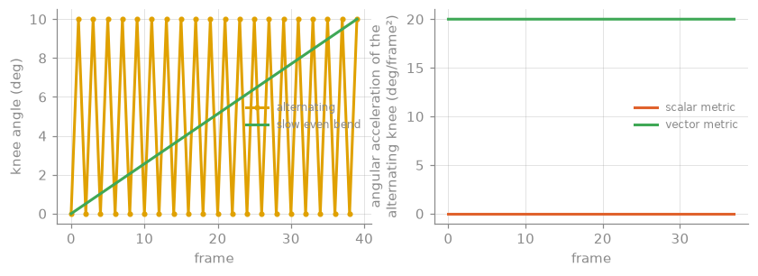
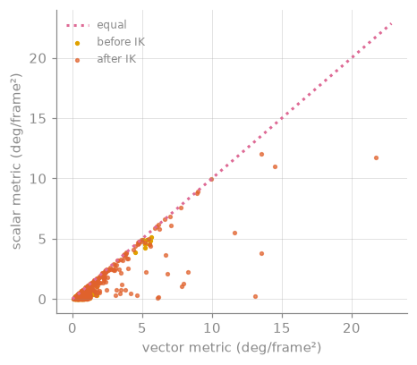

When is the body in the air, and can you trust a smoothness number?#
What you will learn
Why a foot fix must know when the body is in flight, and how free fall gives a test for it.
Why the pelvis is a fragile stand-in for the body in that test, and how a mass-weighted centre of mass and a least-squares ballistic fit repair it.
How a smoothness metric built from rotation angles reports zero for a joint that shakes, and how a vector angular acceleration with elapsed time fixes it.
How to read a published number after its metric has been corrected.
Prerequisites: Lesson 7a (contact, root lock, leg IK) and Lesson 3a (joint rotations).
This lesson has two halves. Both are about a measurement that looked reasonable, was used for a while in the real project, and turned out to answer a different question from the one asked.
1. A jump must not be pinned#
Lesson 7a put planted soles on the floor. A tracker also produces frames in which no foot is near the floor. There are two very different reasons for that:
the person jumped, and the frames are right;
the tracker floated the body by a few centimetres, and the frames are wrong.
A pipeline that grounds every airborne frame deletes jumps. A pipeline that grounds none keeps floats. The
toy jump shows the first failure.
FPS, G = 30.0, 9.81
poses_j, trans_j = cu.motion("jump", 48)
f_jump = mo.feet(poses_j, trans_j, fps=FPS)
low = f_jump.height.min(1).values # lowest sole of both feet, per frame
_, trans_flat = cu.ground(poses_j, trans_j) # "always grounded": every frame onto the floor
low_flat = mo.feet(poses_j, trans_flat, fps=FPS).height.min(1).values
actor = cu.ToyActor()
cam = cu.orbit_camera(azimuth_deg=70, radius=5.4, target=(0.0, 1.1, 0.0), size=128)
show = (10, 20, 26, 32)
cu.show_images([actor.render(cam, poses_j[t], trans_j[t])[0] for t in show]
+ [actor.render(cam, poses_j[t], trans_flat[t])[0] for t in show],
[f"jump, frame {t}" for t in show] + [f"grounded, frame {t}" for t in show], ncols=4, size=1.9);
print(f"highest sole in the jump {100 * float(low.max()):.0f} cm, after grounding every frame {100 * float(low_flat.max()):.1f} cm")
assert float(low.max()) > 0.2 and float(low_flat.max()) < 1e-4
highest sole in the jump 38 cm, after grounding every frame 0.0 cm

The grounded version stretches its legs and stays on the floor: the jump is gone. So for every run of airborne frames the pipeline has to decide: flight or float?
2. Free fall is the test#
Physics offers a clean criterion. Once the feet leave the floor, the only force on the body is gravity, so the body’s height follows
If something holds the body up (a foot the tracker missed), the acceleration is nowhere near \(-g\). The test is therefore: over each airborne window, measure the vertical acceleration \(a\), and call the window a flight when \(a < -0.7\, g\). The threshold leaves room for noise.
Which height, and how to get an acceleration from it? The first version used the simplest answers: the pelvis height \(y_p\), and four samples. The mean acceleration over a window of frames \(a \ldots b-1\) is the last velocity inside the window minus the first, divided by the time between them (the “chord” estimate):
def chord(y, a, b, fps=FPS):
"""Mean acceleration over frames a .. b-1 from the first and last step inside the window."""
return float(((y[b - 1] - y[b - 2]) - (y[a + 1] - y[a])) / (b - a - 2)) * fps * fps
def pelvis_height(poses, trans):
return mo.fk(poses, trans)[1][:, 0, 1]
windows = mo.airborne_runs(f_jump.height, air=0.02) # runs with both soles more than 2 cm up
(a, b), = windows
acc = chord(pelvis_height(poses_j, trans_j), a, b)
print(f"airborne window: frames {a} to {b - 1} | pelvis acceleration {acc / G:+.2f} g -> flight: {acc < -0.7 * G}")
assert abs(acc - mo.chord_acceleration(pelvis_height(poses_j, trans_j), a, b, FPS)) < 1e-6
assert acc < -0.9 * G
# a float: the same person standing in a slow squat, with a tracking error that lifts the root by 5 cm for 10 frames
poses_s, trans_s = cu.motion("squat", 48)
bump = torch.zeros(48)
bump[20:30] = 0.05 * torch.sin(math.pi * (torch.arange(10) + 0.5) / 10) ** 2
trans_float = trans_s.clone(); trans_float[:, 1] += bump
(af, bf), = mo.airborne_runs(mo.feet(poses_s, trans_float).height, air=0.02)
acc_f = chord(pelvis_height(poses_s, trans_float), af, bf)
print(f"float window: frames {af} to {bf - 1} | pelvis acceleration {acc_f / G:+.2f} g -> flight: {acc_f < -0.7 * G}")
assert acc_f > -0.7 * G
airborne window: frames 18 to 33 | pelvis acceleration -1.00 g -> flight: True
float window: frames 22 to 27 | pelvis acceleration -0.18 g -> flight: False
Both answers are right. The jump is in free fall and is left alone. The float is not, so it would be grounded. On these two examples the pelvis test looks finished.
3. The pelvis is not the body#
Newton’s law applies to the centre of mass, not to any particular joint. In the toy jump the body is rigid while it is in the air, so the pelvis and the centre of mass move together and the difference does not show. People do not jump like that. They pull their knees up. When the legs rise relative to the trunk, the centre of mass moves up inside the body, and because the centre of mass is the point that must follow the parabola, the pelvis is pushed down relative to it.
mo.tucked_hop makes a small hop with an adjustable tuck. Its centre of mass follows an exact parabola
whatever the legs do. First the centre of mass itself: every body part \(p\) has a centre \(\mathbf{c}_p\) (the
middle of its capsule) and a share \(m_p\) of the body mass (cu.body.SEGMENT_MASS, rough values in the spirit
of the tables in [Winter, 2009]), and
def centre_of_mass(pose, trans):
"""Mass-weighted mean of the part centres, for one frame."""
A, _ = cu.skinning_transforms(pose, trans) # rest pose -> posed, per joint
seg_a, seg_b, _ = cu.body.bone_segments()
mid = 0.5 * (seg_a + seg_b) # (P, 3) part centres in the rest pose
Ap = A[torch.tensor(cu.body.PART_JOINT)] # each part's joint transform
posed = torch.einsum("pab,pb->pa", Ap[:, :3, :3], mid) + Ap[:, :3, 3]
return (cu.body.SEGMENT_MASS[:, None] * posed).sum(0)
poses_h, trans_h = mo.tucked_hop(tuck_deg=35.0)
com_inline = torch.stack([centre_of_mass(poses_h[t], trans_h[t]) for t in range(len(poses_h))])
com_h = mo.centre_of_mass(poses_h, trans_h)
print("inline vs library centre of mass, max difference:", float((com_inline - com_h).abs().max()))
assert float((com_inline - com_h).abs().max()) < 1e-5
mass = cu.body.SEGMENT_MASS
legs = sum(float(mass[cu.part_index(f"{s}_{n}")]) for s in "lr" for n in ("thigh", "shin", "foot"))
print(f"the two legs carry {legs:.0%} of the mass")
cam_h = cu.orbit_camera(azimuth_deg=70, size=128)
plain = mo.tucked_hop(tuck_deg=0.0)
cu.show_images([actor.render(cam_h, plain[0][t], plain[1][t])[0] for t in (11, 15)]
+ [actor.render(cam_h, poses_h[t], trans_h[t])[0] for t in (11, 15)],
["plain hop, take-off", "plain hop, top", "tucked hop, take-off", "tucked hop, top"], size=1.9);
inline vs library centre of mass, max difference: 1.1920928955078125e-07
the two legs carry 33% of the mass
Now run the flight test on hops with more and more tuck, once with the pelvis and once with the centre of mass.
tucks = [0.0, 5.0, 10.0, 15.0, 20.0, 25.0, 30.0, 35.0, 40.0]
acc_pelvis, acc_com, drop = [], [], []
for tuck in tucks:
p, t = mo.tucked_hop(tuck_deg=tuck)
(a, b), = mo.airborne_runs(mo.feet(p, t).height, air=0.02)
y_p, y_c = pelvis_height(p, t), mo.centre_of_mass(p, t)[:, 1]
acc_pelvis.append(chord(y_p, a, b) / G)
acc_com.append(chord(y_c, a, b) / G)
rel = y_p - y_c
drop.append(100 * float(rel[a - 1] - rel[a:b].min())) # how far the pelvis sinks relative to the COM, cm
fig, axes = plt.subplots(1, 2, figsize=(9.0, 3.2))
ax = axes[0]
p35, t35 = mo.tucked_hop(tuck_deg=35.0)
k = cu.to_np(torch.arange(len(p35)))
y_p, y_c = pelvis_height(p35, t35), mo.centre_of_mass(p35, t35)[:, 1]
(a, b), = mo.airborne_runs(mo.feet(p35, t35).height, air=0.02)
ax.axvspan(a, b - 1, color=cu.COLORS["contact"], alpha=0.15, lw=0, label="airborne")
ax.plot(k, 100 * cu.to_np(y_c - y_c[0]), "-o", ms=3, color=cu.COLORS["truth"], label="centre of mass")
ax.plot(k, 100 * cu.to_np(y_p - y_p[0]), "-o", ms=3, color=cu.COLORS["error"], label="pelvis")
ax.set_xlabel("frame"); ax.set_ylabel("height change (cm)"); ax.set_title("hop with a 35° tuck"); ax.legend(fontsize=8)
ax = axes[1]
ax.plot(drop, acc_com, "-o", color=cu.COLORS["truth"], label="centre of mass")
ax.plot(drop, acc_pelvis, "-o", color=cu.COLORS["error"], label="pelvis")
ax.axhline(-0.7, color=cu.COLORS["contact"], ls=":", label="flight threshold")
ax.set_xlabel("pelvis drop relative to the centre of mass (cm)"); ax.set_ylabel("measured acceleration (g)")
ax.legend(fontsize=8)
flip = next(d for d, acc in zip(drop, acc_pelvis) if acc > -0.7)
print(f"the pelvis test stops calling the hop a flight once the pelvis has sunk {flip:.1f} cm relative to the centre of mass")
assert flip < 2.5 and acc_pelvis[0] < -0.9 and max(acc_com) < -0.95
the pelvis test stops calling the hop a flight once the pelvis has sunk 1.2 cm relative to the centre of mass

The left panel shows why. In the air the centre of mass draws a parabola. The pelvis starts on the same curve, is pulled down as the knees come up, and is flatter on top: less curvature means less measured acceleration. The right panel is the result. With the centre of mass, every hop measures \(-1\,g\). With the pelvis, the measured acceleration climbs with the tuck and crosses the threshold when the pelvis has moved by a centimetre or two. Beyond that point this real hop is classified as a float.
What follows from the wrong label is what Section 1 showed. A pipeline that grounds everything that is not a flight pulls this hop down to the floor:
def ground_unless_flight(poses, trans, signal):
"""Put the lowest sole on the floor in every airborne window that fails the free-fall test."""
out = trans.clone()
wins = mo.airborne_runs(mo.feet(poses, trans).height, air=0.02)
for a, b, acc_g, is_flight in mo.flight_test(signal, wins, FPS, method="chord"):
if not is_flight:
out[a:b] = cu.ground(poses[a:b], trans[a:b])[1]
return out
peak = lambda trans: 100 * float(mo.feet(p35, trans).height.min(1).values.max())
by_pelvis = ground_unless_flight(p35, t35, pelvis_height(p35, t35))
by_com = ground_unless_flight(p35, t35, mo.centre_of_mass(p35, t35)[:, 1])
print(f"highest sole: original {peak(t35):.1f} cm | pelvis classifier {peak(by_pelvis):.1f} cm | centre-of-mass classifier {peak(by_com):.1f} cm")
assert peak(by_pelvis) < 2.5 and abs(peak(by_com) - peak(t35)) < 1e-3
highest sole: original 19.2 cm | pelvis classifier 1.8 cm | centre-of-mass classifier 19.2 cm
4. Fit the whole arc#
The chord estimate reads four samples: two at each end of the window. Tracking noise on any one of them moves the answer. A window of \(n\) frames has \(n\) samples, and a least-squares fit uses them all. Fit a parabola \(y = c_0 + c_1 t + c_2 t^2\) and read the acceleration as \(2 c_2\). A second fit with gravity held fixed, \(y = y_0 + v_0 t - \tfrac12 g t^2\), has only two free numbers; its residual says how well a ballistic arc explains the window.
def noise_trial(height, a, b, sigma, trials=300, seed=0):
"""Measured acceleration (g) of both estimators under Gaussian height noise of `sigma` metres."""
g = cu.generator(seed)
out = {"chord": [], "lsq": []}
for _ in range(trials):
noisy = height + sigma * cu.randn(len(height), generator=g)
for method in out:
out[method].append(mo.flight_test(noisy, [(a, b)], FPS, method=method)[0][2])
return {m: torch.tensor(v) for m, v in out.items()}
cases = {}
for name, (p, t) in {"short hop": mo.tucked_hop(tuck_deg=0.0), "long jump": (poses_j, trans_j)}.items():
(a, b), = mo.airborne_runs(mo.feet(p, t).height, air=0.02)
com = mo.centre_of_mass(p, t)[:, 1]
fit = mo.ballistic_fit(com, a, b, FPS)
cases[name] = noise_trial(com, a, b, sigma=0.004)
print(f"{name} ({b - a} airborne frames): clean fit {fit['acc_over_g']:+.3f} g, constant-gravity residual {1000 * fit['rms']:.2f} mm")
for method, x in cases[name].items():
print(f" 4 mm height noise, {method:5s}: spread {float(x.std()):.2f} g, flights missed {float((x > -0.7).float().mean()):.0%}")
fig, axes = plt.subplots(1, 2, figsize=(9.0, 2.8), sharey=True)
bins = np.linspace(-2.0, 0.0, 41)
for ax, (name, res) in zip(axes, cases.items()):
ax.hist(cu.to_np(res["chord"]), bins=bins, color=cu.COLORS["error"], alpha=0.6, label="chord (4 samples)")
ax.hist(cu.to_np(res["lsq"]), bins=bins, color=cu.COLORS["truth"], alpha=0.6, label="least squares (all samples)")
ax.axvline(-0.7, color=cu.COLORS["contact"], ls=":", label="flight threshold")
ax.set_xlabel("measured acceleration (g)"); ax.set_title(name)
axes[0].set_ylabel("trials"); axes[0].legend(fontsize=8)
assert float(cases["long jump"]["lsq"].std()) < 0.5 * float(cases["long jump"]["chord"].std())
assert float(cases["short hop"]["lsq"].std()) < float(cases["short hop"]["chord"].std())
short hop (5 airborne frames): clean fit -1.000 g, constant-gravity residual 0.00 mm
4 mm height noise, chord: spread 0.26 g, flights missed 13%
4 mm height noise, lsq : spread 0.21 g, flights missed 8%
long jump (16 airborne frames): clean fit -1.000 g, constant-gravity residual 0.00 mm
4 mm height noise, chord: spread 0.05 g, flights missed 0%
4 mm height noise, lsq : spread 0.01 g, flights missed 0%

The result deserves an honest reading. On the long jump the fit is several times tighter than the chord. On the short hop it is only a little tighter, and both estimators still miss some flights: a handful of samples carry little information about a second derivative, whichever way they are combined. Least squares is the better default, not a cure. A window this short needs more evidence than its own height samples, for example contact labels from a second source.
The two repairs address different errors. The centre of mass removes a systematic error that comes from the body changing shape. The fit reduces the random error that comes from noise. Neither helps with the other’s problem.
5. A smoothness metric that cannot see shaking#
The second half of the lesson is about a different quantity with the same kind of flaw. Lesson 7a ended with a warning: leg IK adds sharp corrections to the leg joints. To check that a fix does not make the motion twitch, pipelines report an angular acceleration: how fast the rotation speed of a joint changes. The first version in the real project was built like this. Let \(R_k\) be a joint’s rotation in frame \(k\) and
It looks like a second difference. Now take the worst twitch there is: a knee that alternates between 0° and 10° on every frame.
def rotation_angle_deg(Ra, Rb):
"""Angle of the rotation that takes Ra to Rb."""
cos = ((Rb @ Ra.transpose(-1, -2)).diagonal(dim1=-2, dim2=-1).sum(-1) - 1) / 2
return torch.rad2deg(torch.acos(cos.clamp(-1, 1)))
def angacc_scalar(poses):
"""The flawed metric: the change of the per-frame rotation angle, deg/frame^2. Shape (T-2, J)."""
R = cu.axis_angle_to_matrix(poses)
theta = rotation_angle_deg(R[:-1], R[1:])
return (theta[1:] - theta[:-1]).abs()
KNEE = cu.joint_index("l_knee")
T = 40
shaky, _ = cu.a_pose(T)
shaky[:, KNEE, 0] = math.radians(10) * (torch.arange(T) % 2) # 0, 10, 0, 10, ... degrees
smooth, _ = cu.a_pose(T)
smooth[:, KNEE, 0] = math.radians(10) * torch.arange(T) / (T - 1) # a slow, even bend from 0 to 10 degrees
for name, p in (("slow even bend", smooth), ("alternating 0/10 deg", shaky)):
print(f"{name:22s} scalar metric, max over frames: {float(angacc_scalar(p)[:, KNEE].max()):.4f} deg/frame^2")
assert float(angacc_scalar(shaky)[:, KNEE].max()) < 1e-2
assert float((angacc_scalar(shaky) - mo.ang_acc_scalar(shaky)).abs().max()) < 1e-2
slow even bend scalar metric, max over frames: 0.0000 deg/frame^2
alternating 0/10 deg scalar metric, max over frames: 0.0000 deg/frame^2
The metric reports zero for a joint that shakes as hard as it can at this frame rate. The reason is in the definition: \(\theta_k\) is the size of each step. The knee moves by 10° in every step, so the size is constant and its difference vanishes. That the direction reverses each time is exactly what the metric threw away when it took an angle.
The repair keeps the direction. The angular velocity of a joint is a vector: its direction is the rotation axis and its length is the speed,
where \(\log\) turns a rotation matrix into its axis-angle vector. All \(\boldsymbol{\omega}\) of one joint are written in the same frame (the joint’s parent frame), so they can be subtracted, and the differences are divided by the elapsed time between frames, not by an assumed frame count.
def angvel_vec(poses, times):
"""(T-1, J, 3) angular velocity vectors in rad/s."""
R = cu.axis_angle_to_matrix(poses)
step = mo.matrix_to_axis_angle(R[1:] @ R[:-1].transpose(-1, -2)) # log(R_{k+1} R_k^T)
return step / (times[1:] - times[:-1])[:, None, None]
def angacc_vec(poses, times):
"""(T-2, J) magnitude of the angular acceleration in deg/s^2."""
w = angvel_vec(poses, times)
mid = 0.5 * (times[1:] + times[:-1])
return torch.rad2deg(((w[1:] - w[:-1]) / (mid[1:] - mid[:-1])[:, None, None]).norm(dim=-1))
times = torch.arange(T) / FPS
vec = angacc_vec(shaky, times)[:, KNEE] / FPS ** 2 # in deg/frame^2, to compare
print(f"alternating 0/10 deg, vector metric: {float(vec.min()):.1f} to {float(vec.max()):.1f} deg/frame^2")
print(f"slow even bend, vector metric: {float(angacc_vec(smooth, times)[:, KNEE].max() / FPS ** 2):.4f} deg/frame^2")
assert abs(float(vec.mean()) - 20.0) < 0.1 # +10 then -10: a change of 20 per frame
assert float((angacc_vec(shaky, times) - mo.ang_acc_vec(shaky, times)).abs().max()) < 1.0
fig, axes = plt.subplots(1, 2, figsize=(9.0, 2.8))
axes[0].plot(cu.to_np(torch.rad2deg(shaky[:, KNEE, 0])), "-o", ms=3, color=cu.COLORS["skeleton"], label="alternating")
axes[0].plot(cu.to_np(torch.rad2deg(smooth[:, KNEE, 0])), color=cu.COLORS["truth"], label="slow even bend")
axes[0].set_xlabel("frame"); axes[0].set_ylabel("knee angle (deg)"); axes[0].legend(fontsize=8)
axes[1].plot(cu.to_np(mo.ang_acc_scalar(shaky)[:, KNEE]), color=cu.COLORS["error"], label="scalar metric")
axes[1].plot(cu.to_np(vec), color=cu.COLORS["truth"], label="vector metric")
axes[1].set_xlabel("frame"); axes[1].set_ylabel("angular acceleration of the\nalternating knee (deg/frame²)"); axes[1].legend(fontsize=8);
alternating 0/10 deg, vector metric: 20.0 to 20.0 deg/frame^2
slow even bend, vector metric: 0.0000 deg/frame^2

The vector metric reports a change of 20° per frame in every frame: +10 followed by −10.
Elapsed time matters for the same reason that direction does: it is part of the definition. Suppose three frames of a smooth swing are lost (a dropped stretch, a cut between takes). A metric that counts frames sees a large step and reports a jerk that never happened.
T2 = 60
t_full = torch.arange(T2) / FPS
swing, _ = cu.a_pose(T2)
swing[:, KNEE, 0] = math.radians(40) * (0.5 - 0.5 * torch.cos(2 * math.pi * 0.8 * t_full)) # a smooth 0.8 Hz swing
keep = torch.tensor([i for i in range(T2) if i not in (20, 21, 22)]) # three frames lost
by_count = mo.ang_acc_vec(swing[keep], fps=FPS)[:, KNEE] # assumes even spacing
by_time = mo.ang_acc_vec(swing[keep], times=t_full[keep])[:, KNEE] # uses the real times
truth = float(mo.ang_acc_vec(swing, times=t_full)[:, KNEE].max())
print(f"peak angular acceleration, deg/s^2: all frames {truth:.0f} | frames lost, counted {float(by_count.max()):.0f} | "
f"frames lost, elapsed time {float(by_time.max()):.0f}")
assert float(by_count.max()) > 2 * truth and float(by_time.max()) < 1.3 * truth
peak angular acceleration, deg/s^2: all frames 504 | frames lost, counted 4484 | frames lost, elapsed time 504
6. What the flawed metric did to a real comparison#
A joint that alternates perfectly is an extreme case. Does the flaw matter on a real change? Rebuild the leg IK result of Lesson 7a and measure the leg joints before and after with both metrics. One inequality holds for every sample: the size of a difference of two vectors is at least the difference of their sizes, \(\lVert \mathbf{a} - \mathbf{b} \rVert \ge \bigl|\lVert\mathbf{a}\rVert - \lVert\mathbf{b}\rVert\bigr|\). So the scalar metric can only be lower than the vector one, and it is lowest where the motion reverses, which is what a correction that overshoots and comes back does.
DETECT = dict(h_on=0.03, h_off=0.06, v_on=0.8, v_off=1.2)
poses_w, trans_w = cu.motion("walk", 96, cycles=2.0)
poses_w, trans_w = mo.tracker_noise(poses_w, trans_w, joint_deg=1.5, root_m=0.01, seed=1) # the tracked walk of 7a
f_w = mo.feet(poses_w, trans_w, fps=FPS)
contact = mo.detect_contact(f_w.height, f_w.speed, **DETECT)
poses_lock, trans_lock = mo.root_lock(poses_w, trans_w, contact)
poses_ik, _ = mo.pin_feet(poses_lock, trans_lock, contact, fps=FPS, ramp=4)
LEG = [cu.joint_index(n) for leg in mo.LEGS for n in leg]
scal = {k: mo.ang_acc_scalar(p)[:, LEG] for k, p in (("before", poses_lock), ("after", poses_ik))}
vect = {k: mo.ang_acc_vec(p, fps=FPS)[:, LEG] / FPS ** 2 for k, p in (("before", poses_lock), ("after", poses_ik))}
ratio_scalar = float(scal["after"].max() / scal["before"].max())
ratio_vector = float(vect["after"].max() / vect["before"].max())
print(f"peak leg angular acceleration, deg/frame^2")
print(f" scalar metric: {float(scal['before'].max()):5.1f} -> {float(scal['after'].max()):5.1f} (x{ratio_scalar:.2f})")
print(f" vector metric: {float(vect['before'].max()):5.1f} -> {float(vect['after'].max()):5.1f} (x{ratio_vector:.2f})")
fig, ax = plt.subplots(figsize=(4.6, 4.0))
top = 1.05 * float(vect["after"].max())
ax.plot([0, top], [0, top], color=cu.COLORS["contact"], ls=":", label="equal")
ax.scatter(cu.to_np(vect["before"]).ravel(), cu.to_np(scal["before"]).ravel(), s=6, color=cu.COLORS["skeleton"], label="before IK")
ax.scatter(cu.to_np(vect["after"]).ravel(), cu.to_np(scal["after"]).ravel(), s=6, color=cu.COLORS["error"], alpha=0.7, label="after IK")
ax.set_xlabel("vector metric (deg/frame²)"); ax.set_ylabel("scalar metric (deg/frame²)"); ax.legend(fontsize=8)
assert bool((scal["after"] <= vect["after"] + 0.05).all()) and bool((scal["before"] <= vect["before"] + 0.05).all())
assert float(vect["after"].max()) > 1.3 * float(vect["before"].max()), "the IK should add visible corrections"
assert ratio_vector > ratio_scalar, "on this walk the scalar metric should understate the increase"
peak leg angular acceleration, deg/frame^2
scalar metric: 5.2 -> 12.0 (x2.33)
vector metric: 5.7 -> 21.8 (x3.83)

No point lies above the dotted line: the scalar metric never exceeds the vector one. After the IK, many points fall far below it. Those are the reversals. On this walk the scalar metric understates how much the IK raises the peak. That direction is not guaranteed for a ratio (both the numerator and the denominator are understated), which is one more reason not to argue from the flawed number at all.
The IK does add twitch, and the honest metric says how much. That is not an argument against the IK. It is the price of pinning the feet, and blending (Lesson 7a, Section 5) is what keeps it down.
In the real pipeline#
Both flaws of this lesson were found in the repository by an external review, reproduced as failing tests, and then fixed behind opt-in switches. The write-up is docs/research_brief.md.
Topic |
Where |
Published facts |
|---|---|---|
Flight or support |
|
An airborne run (lowest sole above 2 cm) is a real flight only if the mean vertical acceleration over the window is below −0.7 g; otherwise the support foot is brought down |
Pelvis versus centre of mass |
docs/research_brief.md, |
The pelvis classifier flips with under 2 cm of pelvis motion. The fix is a segment-mass-weighted centre of mass and a least-squares ballistic fit, both opt-in |
Did the fix change results? |
RESULTS.md |
On the one solo clip that was rerun, median foot slide went from 1.853 to 1.885 mm/s and the 90th percentile stayed at 9.22 mm/s: no material change on that take |
Angular acceleration |
|
The old metric differenced rotation-angle magnitudes; a joint alternating 0° / 10° scored zero. The vector metric uses a common frame and elapsed time |
The corrected number |
docs/leg_ik.md, docs/plus-feet.md |
On one solo clip, leg IK raises the peak leg angular acceleration from 16.1 to 39.1 deg/frame² (×2.4). The old metric had reported 16.0 to 28.0 (×1.75) |
Three things to take from that record. First, the centre-of-mass fix changed almost nothing on the clip that was rerun, and the project says so; a correct method does not have to move a number to be worth having. Second, the four-avatar angular-acceleration tables in docs/leg_ik.md were not recomputed, and the document labels them as lower bounds instead of leaving them to be misread. Third, the pelvis test alone could not separate a slightly mis-timed cross-step from a small hop, so the real classifier also asks whether two independent sets of contact labels agree that both feet are planted (docs/DANCE.md). That is the “more evidence” Section 4 asked for.
The real code computes the centre of mass from mesh vertices with published segment mass fractions; the toy uses one point per capsule and rough shares.
Summary#
A foot fix must separate flight from float. In flight the body is in free fall, so its vertical acceleration is \(-g\); that is a test.
The law holds for the centre of mass. The pelvis follows it only while the body keeps its shape, and a tuck of a couple of centimetres is enough to flip a pelvis-based test.
A least-squares parabola over the whole window is less noisy than an estimate from its end points, clearly so for long flights and only slightly for short hops.
A metric made from rotation angles has lost the direction. It reports zero for a joint that reverses on every frame. Difference angular-velocity vectors in one frame, over elapsed time.
When a metric is corrected, recompute what you can and label what you cannot.
Exercises#
In the tucked hop, the test window is the run where both soles are more than 2 cm up. Repeat the tuck sweep with the pelvis and the least-squares fit (
method="lsq") instead of the chord. Does the fit rescue the pelvis?Build a signal in which a joint rotates by 10° per frame about the x axis for 20 frames and then by 10° per frame about the y axis. What do the two metrics report at the switch, and why?
The scalar metric is zero for the alternating knee. Find a second, different motion for which it is zero although the joint is not moving at a constant angular velocity.
Solution 1
for tuck in (0.0, 20.0, 35.0):
p, t = mo.tucked_hop(tuck_deg=tuck)
wins = mo.airborne_runs(mo.feet(p, t).height, air=0.02)
print(tuck, mo.flight_test(pelvis_height(p, t), wins, FPS, method="lsq"),
mo.flight_test(mo.centre_of_mass(p, t)[:, 1], wins, FPS, method="lsq"))
No. The fit reduces random error, and the pelvis error is systematic: the pelvis really does follow a flatter curve than a parabola under gravity. A better estimator applied to the wrong signal gives a more precise wrong answer.
Solution 2
p, _ = cu.a_pose(40)
R = torch.eye(3)
step_x = cu.axis_angle_to_matrix(torch.tensor([math.radians(10), 0.0, 0.0]))
step_y = cu.axis_angle_to_matrix(torch.tensor([0.0, math.radians(10), 0.0]))
for k in range(40):
p[k, KNEE] = mo.matrix_to_axis_angle(R)
R = (step_x if k < 20 else step_y) @ R
print(mo.ang_acc_scalar(p)[:, KNEE].max(), (mo.ang_acc_vec(p, fps=FPS)[:, KNEE] / FPS ** 2).max())
The step size is 10° before and after, so the scalar metric stays at zero. The angular velocity vector turns by 90°, and the vector metric reports \(10\sqrt{2} \approx 14\) deg/frame² at the switch. A change of axis is invisible to the scalar metric for the same reason a reversal is.
Solution 3
Any motion with a constant step size works: for example a joint whose rotation axis sweeps around a cone while the per-frame angle stays fixed (a wobble). Its angular velocity has constant length and a direction that changes all the time, so the vector metric is positive in every frame and the scalar one is zero.
References#
Segment masses and the centre of mass of the human body: [Winter, 2009].
The audit that found both flaws, and the corrected numbers: docs/research_brief.md, docs/leg_ik.md, RESULTS.md.
The flight and support rules of the dance pipeline: docs/DANCE.md.